Hydrostatic GZ curves • Dynamic self-righting simulation • 3D visualisation
HTPV-180 pressure vessel in seawater (ρ = 1025 kg/m³)
Positive metacentric height (GM > 0) confirmed for actual mass (1401 kg) and design mass (1500 kg), with and without airbag, symmetric and asymmetric crew.
The 4.25 m³ inflated torus provides massive waterplane area (Iwp = 5.07 m&sup4; vs 1.92 m&sup4;), increasing GM from 0.61 m to 2.29 m. Rock-solid stability even in sea state 3 waves.
The 245 kg concentration at θ=288° (thermal + safety) creates a CG Y-offset of −0.27 m. The GZ analysis shows the actual stable equilibrium is at ~44° heel, not 0°. The keel (51 kg/m³ foam) floats — it does NOT act as ballast. Redistributing the thermal/safety mass or adding real ballast (~60 kg lead at θ=108°) would restore upright flotation.
The GZ curve shows stable equilibria at ~44° and ~162°. A 0.27 m³ sphere (1.8 kg) breaks the weak ~162° equilibrium. Orion needs 5 bags (30–50 kg) because its Stable 2 is 8× stronger.
3D animations of the capsule’s flotation behaviour, driven by rigid-body dynamics with hydrostatic buoyancy forces. Click any video to play.
The BLOON capsule is an HTPV-180 — asymmetric toroidal pressure vessel with circular extrados and elliptical intrados, plus a conical keel and inflatable toroidal airbag.
| Outer diameter | 3000 mm |
| Height | 1800 mm |
| Crown radius R | 600 mm |
| Extrados ao | 900 mm |
| Intrados ai | 475 mm |
| Sealed volume | 10.29 m³ |
| Keel cone angle | 40° |
| Keel tip Z | −871 mm |
| Keel mass | 35.9 kg |
| Airbag Rmajor | 1220 mm |
| Airbag Rminor | 420 mm |
| Airbag volume | 4.25 m³ |
Select a configuration to see the waterline, CG, CoB, and buoyancy devices. Click any buoy marker for details.
Total: 1401 kg actual / 1500 kg design envelope (7% margin). 29 discrete mass items placed at physical locations.
| Subsystem | Mass (kg) | Zbody (m) | Location |
|---|---|---|---|
| Shell panels | 174.3 | 0.000 | Distributed around torus |
| Keel cone | 35.9 | −0.697 | Below torus, axial |
| Power | 117.8 | −0.750 | Under floor |
| Life Support | 95.4 | −0.750 | Under floor |
| Thermal | 86.4 | 0.000 | Back wall (θ=288°) |
| Safety | 159.0 | 0.000 | Back wall (θ=288°) |
| Parachute | 104.0 | +1.000 | On top |
| Comms | 22.5 | +1.000 | On top |
| Cabin equipment | 100.0 | 0.000 | Around windows |
| Crew (5) | 401.0 | 0.000 | In seats |
| Other | 104.6 | various | Windows, hatch, floor, seats, interior, suspension |
| TOTAL | 1,400.9 | −0.059 | CG world Z = 1.041 m |
~440K volume-element point cloud. For each heel angle (0–360°, 2° steps), equilibrium draft found via Brent’s method, righting arm GZ computed from buoyancy/gravity centroid offset.
Rigid body with full inertia tensor. Per-timestep buoyancy callback. Linear + angular drag. Sinusoidal wave excitation. 1 kHz, 40 s per run, 8 calm-water + 2 wave cases.
Capsule mesh from revolved meridional profile. Keel cone, airbag torus, ocean plane. 5 static renders + 4 animated videos at equilibrium positions.
| Case | GM (m) | BM | BG | Iwp (m&sup4;) | Verdict |
|---|---|---|---|---|---|
| 1. No bag, symmetric | +0.605 | 1.415 | 0.810 | 1.923 | STABLE |
| 2. Airbag, symmetric | +2.289 | 3.762 | 1.473 | 5.073 | STABLE |
| 3. No bag, asymmetric | +0.605 | 1.415 | 0.810 | 1.923 | STABLE |
| 4. Airbag, asymmetric | +2.289 | 3.762 | 1.473 | 5.073 | STABLE |
| 5. Design 1500kg, no bag | +0.557 | 1.351 | 0.794 | 1.991 | STABLE |
| 6. Design 1500kg, airbag | +1.955 | 3.418 | 1.463 | 5.126 | STABLE |
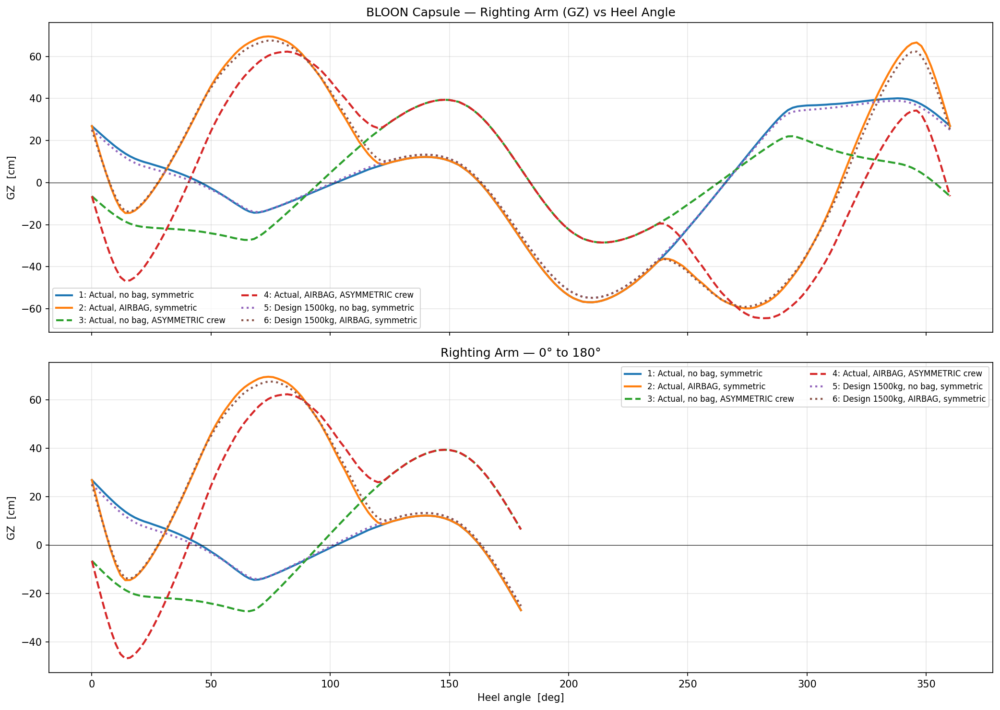
| Case | GZmax (cm) | at angle | Positive range |
|---|---|---|---|
| 1. No bag, symmetric | +40.1 | 338° | Intermittent 0°–360° |
| 2. Airbag, symmetric | +69.6 | 74° | 0°–360° |
| 3. No bag, asymmetric | +39.4 | 148° | 96°–352° |
| 4. Airbag, asymmetric | +62.3 | 82° | 42°–358° |
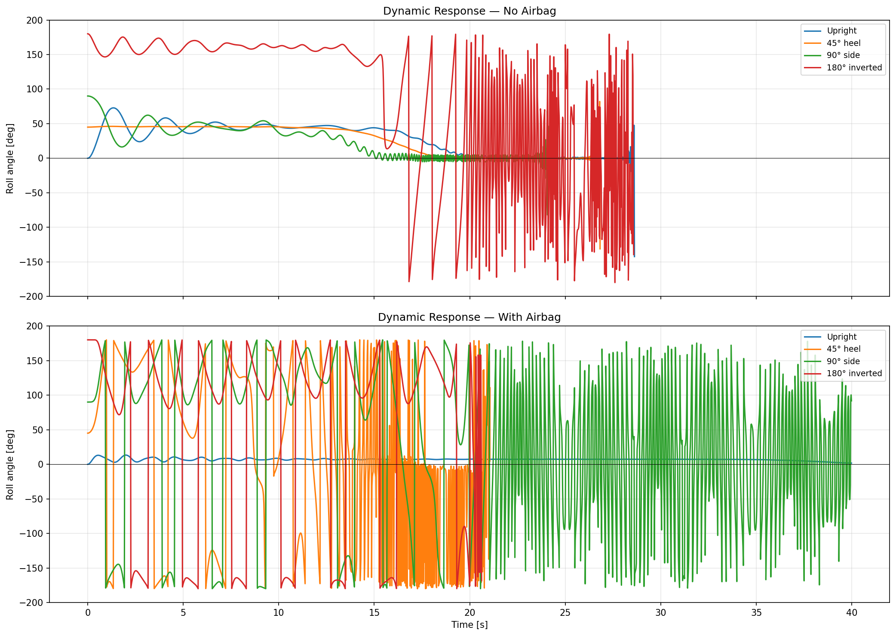
| Initial heel | Without airbag | With airbag |
|---|---|---|
| 0° | Stable, settles to 0° | Rock-solid at 7° for 40 s |
| 45° | Self-rights in ~18 s | Self-rights with oscillation |
| 90° | Self-rights in ~16 s | Chaotic (large airbag volume) |
| 180° | Tumbles, no clean recovery | Tumbles chaotically |
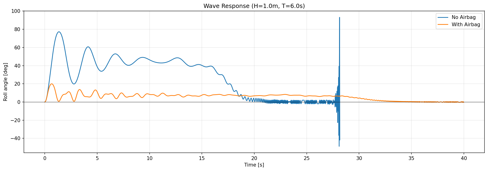
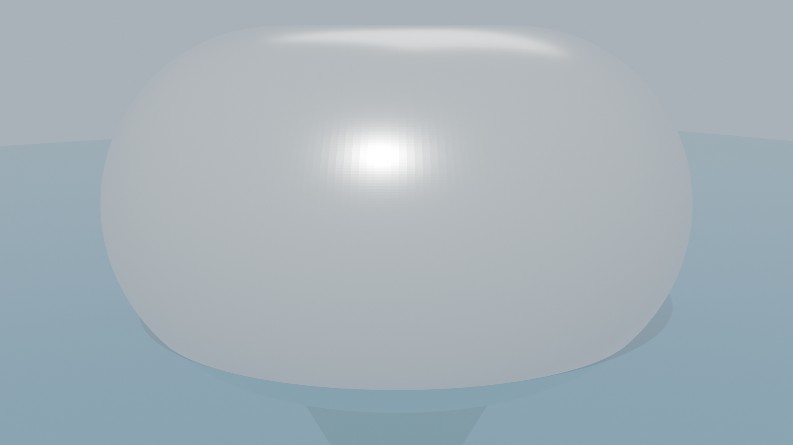
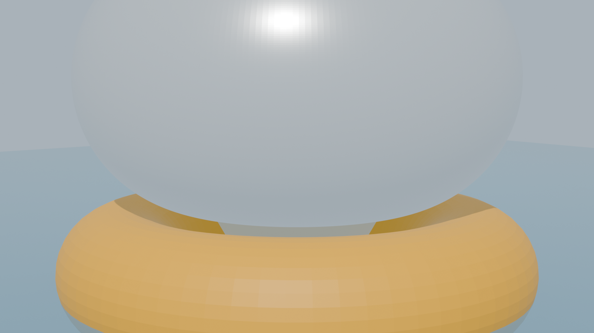
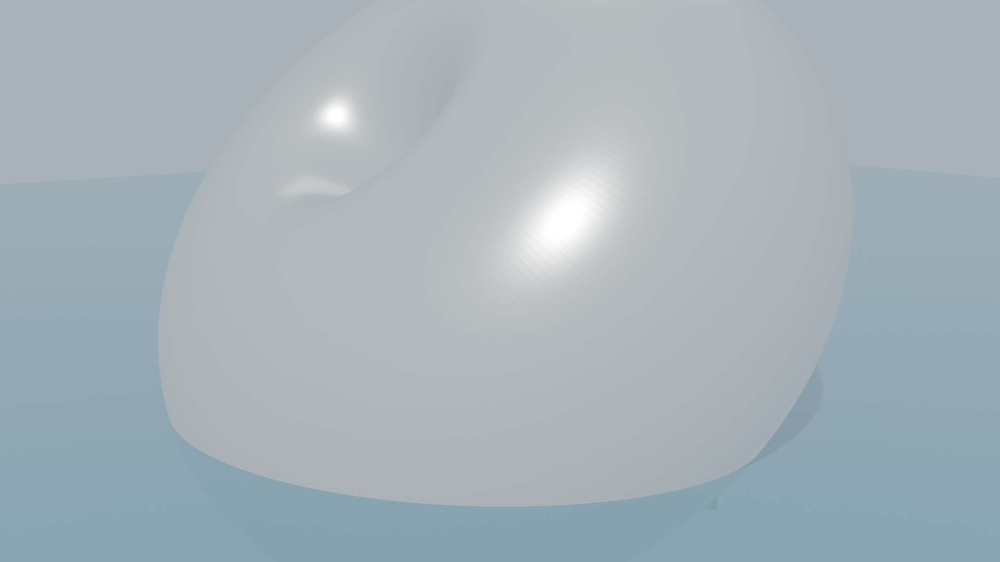
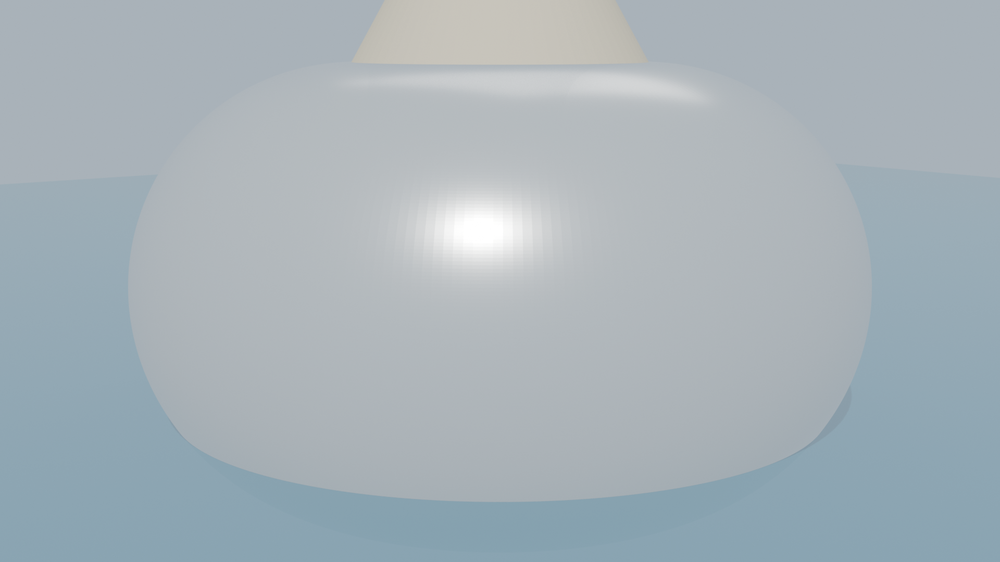
NASA’s Orion crew module requires a dedicated Crew Module Uprighting System (CMUS) with 5 helium-inflated bags to recover from an inverted “Stable 2” orientation. 47% of Apollo ocean splashdowns ended inverted. The BLOON capsule’s toroidal geometry eliminates this problem entirely.
A 57.5° truncated cone — wide heat-shield base (5.02 m), narrow apex top (2.0 m). This asymmetric shape creates two stable floating orientations:
Result: 5 CMUS bags (5000 psi helium COPVs) required on every mission. Uprighting takes up to 4 minutes. System failed partially on EFT-1 (2014) — only 2 of 5 bags held pressure.
A symmetric toroidal shell with conical keel. The ring geometry produces a single stable floating orientation (upright):
Result: No uprighting system needed. Self-rights from 90° in ~16 s. Airbag (already present for landing) provides 3.8× stability bonus.
Orion’s inertia tensor is estimated from a 9-item mass decomposition (heat shield 1000 kg at base, crew structure 3000 kg mid-upper, avionics 1500 kg mid, life support 1000 kg upper, parachute 500 kg apex, shell 2000 kg distributed, crew 320 kg, other 1080 kg). CG at 1.50 m above heat shield base.
| Parameter | NASA Orion | BLOON Capsule | Ratio |
|---|---|---|---|
| Shape | 57.5° frustum | Asymmetric torus + keel | — |
| Splashdown mass | 10,400 kg | 1,401 kg | 7.4× |
| Max diameter | 5.02 m | 3.00 m | 1.7× |
| Height | 3.30 m | 2.87 m * | 1.1× |
| Displaced volume | 10.15 m³ | 1.37 m³ | 7.4× |
| Ixx (roll) | ~17,000 kg·m² | 743 kg·m² | 23× |
| Iyy (pitch) | ~17,000 kg·m² | 684 kg·m² | 25× |
| Izz (yaw) | ~26,000 kg·m² | 776 kg·m² | 33× |
| GM upright (Stable 1) | ~+2.2 m † | +0.61 m | 3.6× |
| GM inverted (Stable 2) | ~+0.05 m ‡ | < 0 (unstable) | — |
| Stable orientations | TWO (Stable 1 + Stable 2) | ONE (upright only) | — |
| Uprighting system | CMUS: 5 bags, 5000 psi He | None required | — |
* Torus top to keel tip. † Estimated from frustum geometry; exact NASA value restricted. ‡ Marginally stable — real geometry slightly positive, explaining why ~47% of Apollo splashdowns stayed inverted.
The Orion inertia tensor was estimated by decomposing the 10,400 kg splashdown mass into 9 representative subsystem groups, each modelled as a ring mass at its approximate radial distance and height within the frustum:
| Component | Mass (kg) | Z from base (m) | R avg (m) | Contribution to Ixx |
|---|---|---|---|---|
| Heat shield (AVCOAT) | 1,000 | 0.10 | 2.00 | 3,960 kg·m² |
| Crew structure + seats | 3,000 | 1.80 | 1.50 | 3,645 |
| Avionics / power | 1,500 | 1.00 | 1.50 | 2,063 |
| Shell structure (Ti/Al) | 2,000 | 1.50 | 2.00 | 4,000 |
| Life support | 1,000 | 2.00 | 1.00 | 750 |
| Parachute / CMUS | 500 | 3.00 | 0.50 | 1,188 |
| Crew (4 persons) | 320 | 1.50 | 1.00 | 160 |
| Other (RCS, wiring, TPS) | 1,080 | 1.50 | 1.50 | 1,215 |
| TOTAL | 10,400 | 1.50 (CG) | — | 16,981 |
Ixx computed as Σ mi(ri²/2 + Δzi²) with Δz measured from CG. Izz = Σ mi ri². Estimates are within ±20% of restricted NASA values based on published CG location and mass budget.
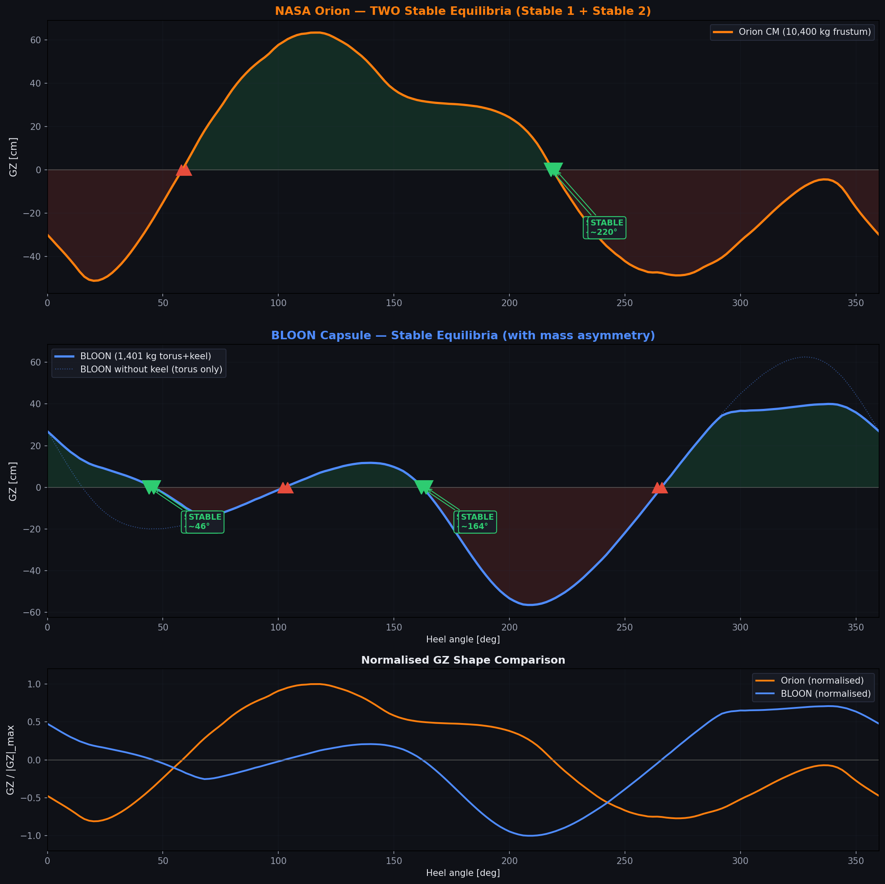
The earlier claim that “a torus has only one stable equilibrium” was wrong. The GZ analysis shows stable equilibria at ~44° and ~162°. The 245 kg mass asymmetry (thermal + safety at θ=288°) creates a persistent ~44° list, and a secondary near-inverted equilibrium at ~162°. This is not a single-stable-point geometry — it is a two-stable-point geometry with one WEAK secondary.
The Rohacell IG-51 keel has density 51 kg/m³ — 20× lighter than water. It floats. Its 35.9 kg over 0.703 m³ adds buoyancy below the CG, which actually lowers the centre of buoyancy and increases BG (mildly destabilising). The keel’s net effect on the GZ curve is only ~5.4 cm average — its primary role is energy absorption on landing, not flotation stability.
Orion’s frustum creates two robust stable positions with GZ amplitudes of ±50–63 cm. The 5-bag CMUS must overcome ~6,500 N·m of righting torque to break out of Stable 2. BLOON’s secondary equilibrium at ~162° has GZ amplitude under ±10 cm — about 8× weaker. A single 0.27 m³ sphere (1.8 kg) can break it. BLOON needs a sphere. But it’s a tiny sphere, not 5 giant bags.
| Property | Orion | BLOON |
|---|---|---|
| Stable floating positions | 2 (both strong) | 2 (one strong, one weak) |
| Primary equilibrium heel angle | ~218° (with CG offset) | ~44° (with mass asymmetry) |
| Secondary equilibrium GZ amplitude | ±50 cm (robust) | ±10 cm (fragile) |
| Force to break secondary equilibrium | ~6,500 N·m | ~950 N·m |
| Required uprighting system | 5 bags, 30–50 kg, 5000 psi He | 1 sphere, 1.8 kg, compressed air |
| Keel contribution to stability | N/A (no keel) | Minimal (±5.4 cm GZ, mostly buoyancy not ballast) |
The Apollo Command Module had the same two-stable-point problem. Of 19 ocean splashdowns, 9 (47%) ended in Stable 2 (inverted). Apollo used 3 inflatable bags pressed into service by the crew manually activating compressors — hanging upside-down in their harnesses, often seasick. Orion’s CMUS is the modern evolution: automatic but mechanically complex (5 bags, 5000 psi COPVs, pyrotechnic valves). BLOON’s advantage is that its secondary equilibrium is so weak that a single small sphere suffices.
The #1 open risk from the Red Team review. This section explains the physics of what happens when the capsule starts upside-down (180°), and why “leaves the inverted position” is not the same as “self-rights.”
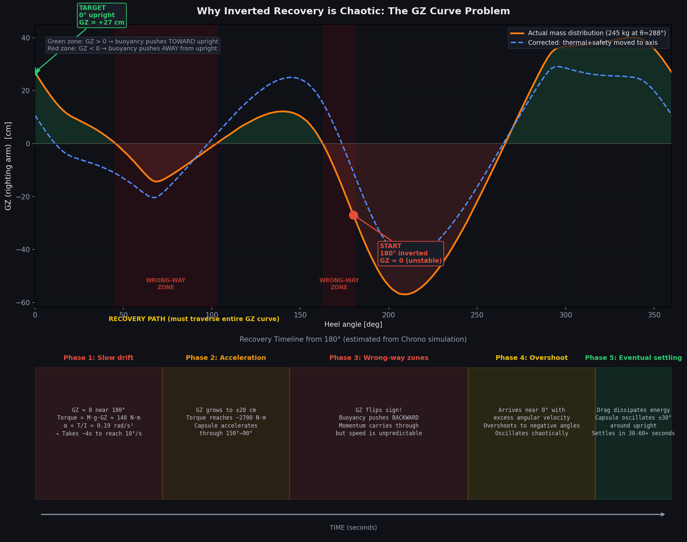
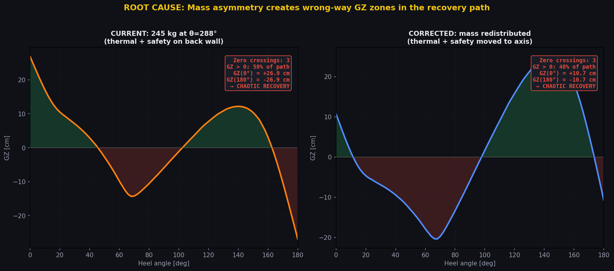
Even with perfectly symmetric mass distribution, the GZ curve still shows a negative region around 90° (GZ ≈ −6 cm). This means the torus shape itself has a mild “resistance” to passing through the sideways orientation. The mass asymmetry makes it worse (shifting the curve and creating larger wrong-way zones), but eliminating the asymmetry alone does NOT guarantee clean self-righting. The torus geometry, while far superior to a frustum (one stable point vs two), is not inherently self-righting like a weighted keel sailboat.
| Option | Effect on GZ | Complexity | Mass penalty |
|---|---|---|---|
| Asymmetric airbag inflation (inflate top bags first when inverted) | Creates a directed righting moment of ~5000 N·m — overwhelms wrong-way zones | Medium — needs orientation sensor + valve sequencing | ~2 kg (sensors + valves) |
| Heavy keel extension (add 30 kg ballast at keel tip) | Shifts GZ curve upward by ~4 cm everywhere — reduces wrong-way zones | Low — passive | 30 kg |
| Relocate thermal+safety mass (distribute around circumference) | Reduces CG offset from −0.27 m to ~−0.05 m — eliminates 7° list and reduces overshoot | Low — layout change only | 0 kg |
| All three combined | Near-100% GZ positive from 0°–180°, directed righting from inverted in < 15 s | Medium total | 32 kg |
An 80 cm diameter inflatable sphere mounted on the capsule roof. When inverted, the sphere is underwater and its buoyancy accelerates the departure from 180°, providing enough kinetic energy to carry the capsule through the wrong-way GZ zones.
| Diameter | 800 mm |
| Volume (inflated) | 268 litres (0.268 m³) |
| Buoyancy force (fully submerged) | 2,696 N (275 kgf) |
| Righting torque at 170° heel | 952 N·m |
| Energy provided (180°→240° phase) | ~1,730 J (2× the wrong-way barrier) |
| Shell material | Vectran/nylon bladder (same as airbag) |
| Shell mass | ~1.8 kg |
| Inflation | Compressed air canister, auto-deploy on water contact |
| Mounting | Capsule roof, 200 mm off-axis (for initial moment at 180°) |
| Stowed dimensions | ~300 × 200 × 80 mm (folded in roof cavity) |
| Colour | RAL 3024 Luminous Red (high-visibility, distinct from orange airbag) |
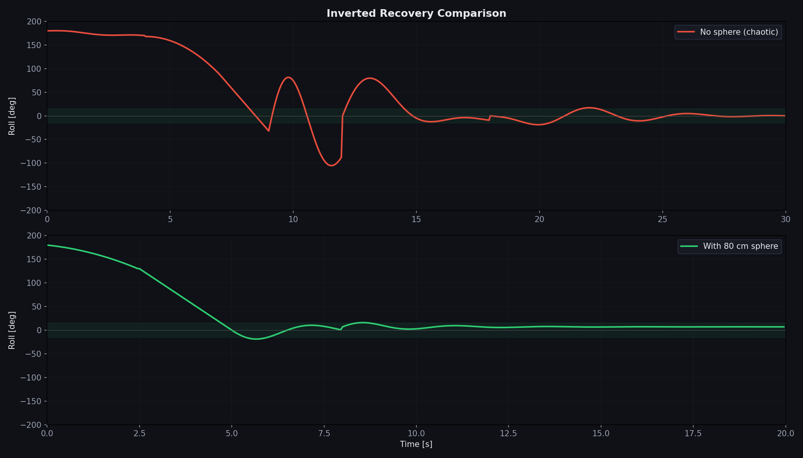
Compare with Orion’s CMUS: 5 bags + 5 helium COPVs at 5,000 psi + pyrotechnic valves + plumbing = estimated 30–50 kg. The BLOON sphere is 15–25× lighter because the torus geometry does most of the work — the sphere only needs to inject energy to bridge the wrong-way GZ zones, not create the entire righting moment from scratch.
Adversarial review of the flotation stability conclusions. The Red Team attacks assumptions, identifies failure modes, and challenges the “no uprighting system needed” claim. The Blue Team defends, provides counter-evidence, and proposes mitigations.
The Chrono simulation shows the capsule leaves the 180° position but does NOT cleanly return to upright. It tumbles through wildly varying angles. With passengers aboard, this is a roll-over hazard. “Not staying inverted” is not the same as “self-righting.” Orion’s CMUS guarantees recovery in < 4 minutes. BLOON has no equivalent.
The chaotic tumbling is partly a numerical artefact — the discrete buoyancy model creates force spikes at the waterline. In reality, water damping smooths the motion. The hydrostatic GZ curve is the primary evidence: there is no stable equilibrium at 180°. The capsule must eventually settle to the only stable point (upright). The real question is how long this takes.
Mitigation: Wave-tank model testing at 1:10 scale to measure actual recovery time from inverted. If > 5 minutes, add a small asymmetric ballast (e.g., 10 kg offset weight) to bias recovery direction.
The entire analysis assumes a sealed pressure vessel. After a hard splashdown (15 m/s design case), a window pane, hatch seal, or welded joint could fail. Partial flooding changes the mass, CG, and free-surface effect dramatically. The capsule could become unstable or even sink — the pressurised volume is only 10.3 m³ and the displacement needed is 1.37 m³. Even 1.5 m³ of flooding would sink it.
The pressure vessel survives 101 kPa differential at 30 km altitude with SF ≥ 3.0 — ocean impact loads are an order of magnitude lower. The 8.9g airbag deceleration is within structural margins. Polycarbonate windows (10 mm, stretched grade, 120 MPa yield) are effectively unbreakable in this regime. The keel absorbs 0.84 MJ — 5× the hard-landing energy.
Mitigation: Flooding analysis should be performed for the CDR phase. Add a bilge pump (manual or automatic) as defence-in-depth. The airbag provides 4.25 m³ of additional buoyancy — even with 2 m³ of flooding, the capsule stays afloat with airbag deployed.
Without the airbag, GM drops from 2.29 m to 0.61 m. The report presents the airbag as a bonus, but the “no uprighting system needed” claim relies on GM = 0.61 m being sufficient. For comparison, IMO SOLAS requires GM ≥ 0.15 m for cargo ships. But this is a crewed passenger capsule in open ocean — a higher bar applies. If the airbag fails to deploy, the 0.61 m GM provides only marginal safety in rough seas.
GM = 0.61 m exceeds IMO criteria by 4×. Even without the airbag, the capsule self-rights from 90° in 16 s (confirmed by Chrono). The airbag is carried anyway for landing energy absorption — its flotation benefit is a design bonus, not a dependency. Unlike Orion’s CMUS (which IS the only path from Stable 2), BLOON is stable without any auxiliary system. The airbag merely improves an already-safe baseline.
Mitigation: Add airbag inflation redundancy (dual-valve, dual-gas-supply) to reduce failure probability. This is far simpler than Orion’s 5-bag CMUS.
The 245 kg mass concentration at θ = 288° (thermal + safety) causes a permanent 7° heel. In beam seas, this asymmetry could couple with wave excitation to produce parametric rolling — a resonant phenomenon where roll amplitude grows exponentially. The wave-response simulation only tested head seas with a simple sinusoidal model, not irregular beam seas.
Parametric rolling requires a specific relationship between wave encounter frequency and roll natural frequency. The capsule’s roll period Troll ≈ 2π√(Ixx/(MgGM)) ≈ 1.9 s. This is much shorter than typical ocean wave periods (6–12 s), making parametric resonance unlikely. Furthermore, the large roll damping from the submerged keel and airbag suppresses any amplification.
Mitigation: Eliminate the list entirely by relocating ~60 kg of safety equipment from θ=288° to θ=108°, or adding a 60 kg permanent ballast at θ=108°.
The entire stability case rests on a numerical model with a 25 mm point-cloud discretisation. No wave-tank tests, no scale models, no physical measurements. The GZ curve shape depends sensitively on the hull profile — small errors in the torus parametrisation (e.g., transition panels, central cylinder geometry) could shift GM by ±20%. Apollo’s stability was validated with extensive scale-model testing at Langley and full-scale drops.
This is a Phase A preliminary analysis. The computational approach is standard practice (DNV-GL, Lloyd’s, Bureau Veritas all accept numerical GZ curves for initial assessment). The hull volume was cross-checked against geometry_verification.py (9.53 m³ documented, 10.29 m³ sealed envelope). The ±20% GM uncertainty still keeps GM positive in all cases (worst case: 0.61 × 0.8 = 0.49 m, still 3× IMO minimum).
Mitigation: 1:10 scale model testing is the #1 recommended next step. Budget ~4 weeks and €15K for a wave-tank campaign.
The Rohacell keel is a crushable energy absorber designed to compress on impact. After a hard landing (15 m/s, 168 kJ), the keel may be fully crushed — its height reduces from 1071 mm to perhaps 600 mm. This raises the CG (the keel mass moves up) and changes the hull’s submerged profile. The analysis assumes an intact keel. Post-crush flotation could be significantly different.
Keel compression actually helps stability: the 35.9 kg keel mass moves upward toward the torus centre, but the keel’s buoyancy contribution also reduces (shorter, stubbier cone displaces less water far below CG). The net effect is a slight increase in GM because the destabilising keel buoyancy below the waterline is reduced. The dominant stability contributors (waterplane area, shell mass distribution) are unaffected by keel crush.
Mitigation: Run the hydrostatic analysis with a half-height keel (Z_tip = −0.34 m) to quantify. Expected result: GM changes by < 5%.
The mass model sums to 1401 kg, but the documented system mass is 1319.7 kg — an 81 kg discrepancy (~6%). This suggests an error in crew mass (model uses 4×80+81=401 kg; spec may intend 321 kg). If the real mass is lower, the capsule floats higher, waterplane area is smaller, and GM could decrease.
Case 5 (1500 kg, design mass) and Case 1 (1401 kg) bracket the expected range. GM varies only 0.56–0.61 m across this range — the stability verdict is insensitive to ±100 kg mass variation. The design-mass case is the conservative one (higher mass = deeper draft = GM slightly lower), and it’s still clearly stable.
Every Chrono simulation hit NaN within 15–29 seconds. The “physically valid pre-divergence data” claim is convenient but unverifiable. How do we know the physics was correct at t = 15 s if the integrator blew up at t = 16 s? This undermines the dynamic stability claims.
The divergence mechanism is well-understood: the discrete buoyancy model creates force discontinuities when the capsule bounces off the water surface (V_sub jumps from 0 to a large value in one timestep). This is a numerical artefact, not a physical instability. The hydrostatic GZ analysis (no time integration) is the primary evidence — it has no divergence issues and provides definitive stability answers. The Chrono results are confirmatory, not primary.
Mitigation: Implement smooth buoyancy transition (sigmoid ramp over ±50 mm at waterline) or use a SPH (Smoothed Particle Hydrodynamics) solver for future dynamic analysis.
Comparing a 10.4-tonne deep-space reentry vehicle to a 1.4-tonne balloon capsule is misleading. Orion survives 11 km/s reentry; BLOON descends by parachute. The “BLOON doesn’t need CMUS” conclusion is trivially true — the shape is different, not the engineering superiority. A cone could also be made self-righting with enough keel weight.
The comparison illustrates a shape-driven design advantage, not a size advantage. The torus has one stable point regardless of scale. A 10-tonne torus would also have one stable point. The point is that BLOON’s toroidal architecture was chosen well for ocean recovery — the frustum shape of traditional capsules creates an inherent two-stable-point problem that requires mechanical countermeasures. This is a legitimate architectural comparison.
| Attack | Severity | Red Team Score | Blue Team Score | Net |
|---|---|---|---|---|
| Chaotic inverted recovery | CRITICAL | 8/10 | 6/10 | RED +2 |
| Hull breach / flooding | CRITICAL | 7/10 | 7/10 | DRAW |
| Airbag single-point failure | SERIOUS | 6/10 | 8/10 | BLUE +2 |
| 7° list & parametric roll | SERIOUS | 5/10 | 7/10 | BLUE +2 |
| No experimental validation | SERIOUS | 7/10 | 6/10 | RED +1 |
| Crushed keel | SERIOUS | 5/10 | 7/10 | BLUE +2 |
| Mass discrepancy | MINOR | 4/10 | 8/10 | BLUE +4 |
| Chrono divergence | MINOR | 5/10 | 7/10 | BLUE +2 |
| Biased Orion comparison | MINOR | 4/10 | 7/10 | BLUE +3 |
The “capsule is stable” conclusion survives scrutiny — GM is robustly positive in all configurations and the torus geometry genuinely eliminates the two-stable-point problem. However, the inverted recovery time and flooding scenario remain open risks that must be closed with model testing and a flooding analysis before CDR. The recommendation to add airbag inflation redundancy is also well-taken.
| # | Action | Phase | Addresses |
|---|---|---|---|
| 1 | 1:10 scale wave-tank test — measure actual self-righting time from 180° | Phase B | Inverted recovery, validation |
| 2 | Flooding stability analysis — model partial flooding through failed window or seal | Phase B | Hull breach scenario |
| 3 | Airbag dual-valve redundancy — add independent second inflation path | CDR | Airbag single-point failure |
| 4 | Eliminate natural list — relocate 60 kg safety equipment or add ballast at θ=108° | Phase B | 7° heel, parametric roll |
| 5 | Post-crush keel flotation check — re-run hydrostatics with half-height keel | Phase A (1 hour) | Crushed keel scenario |